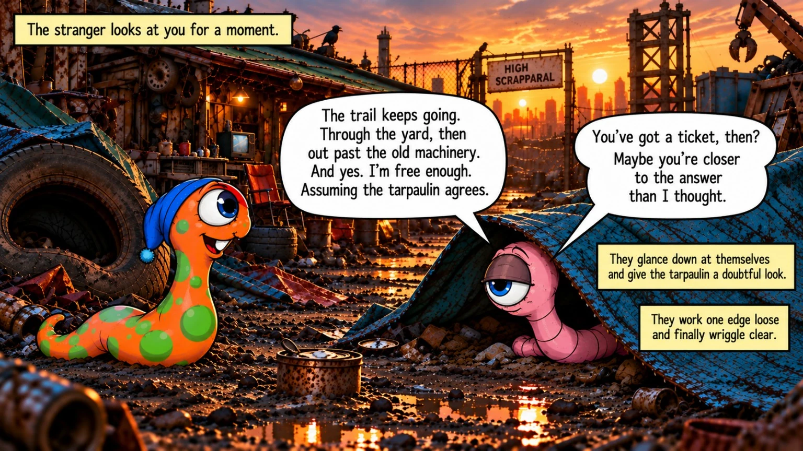
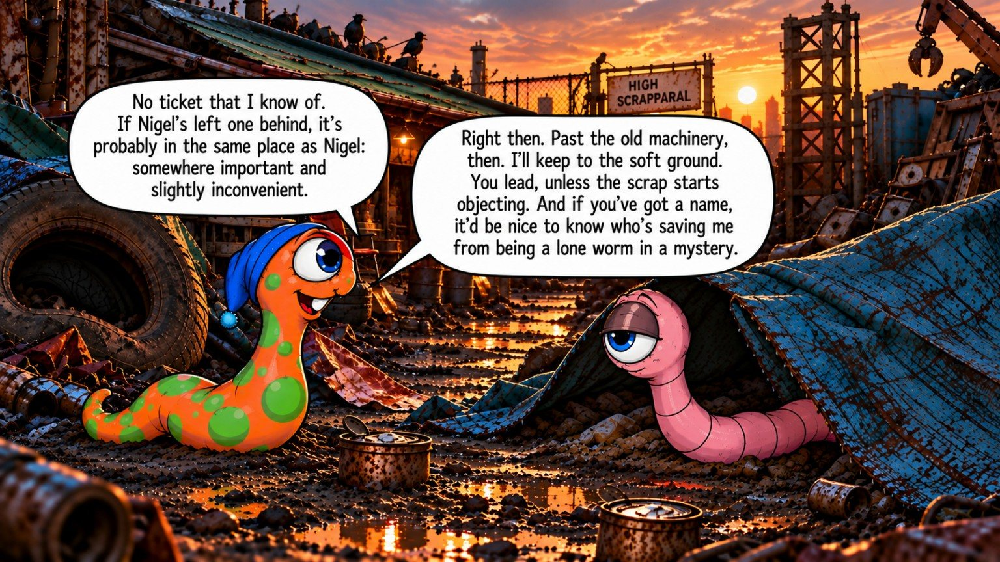
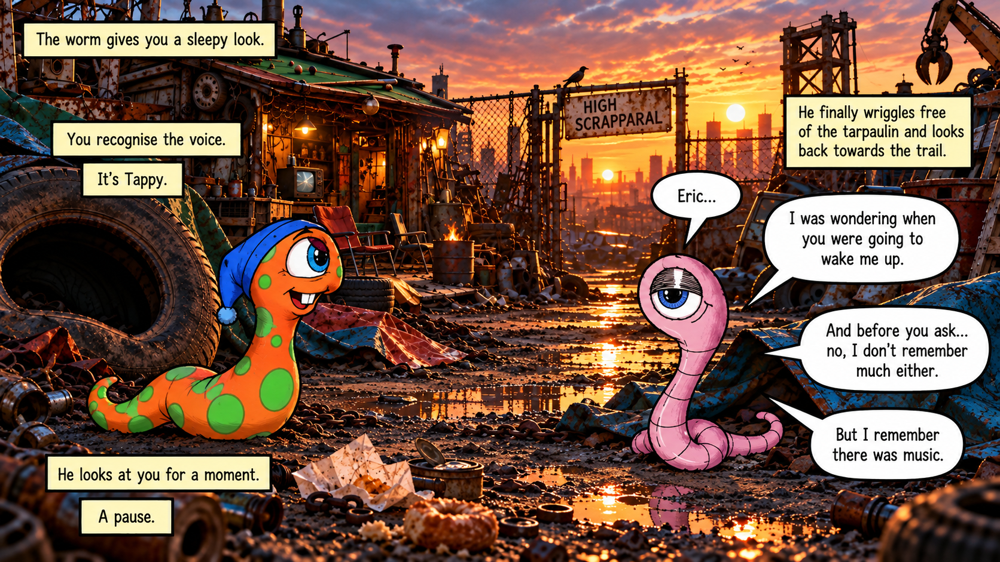
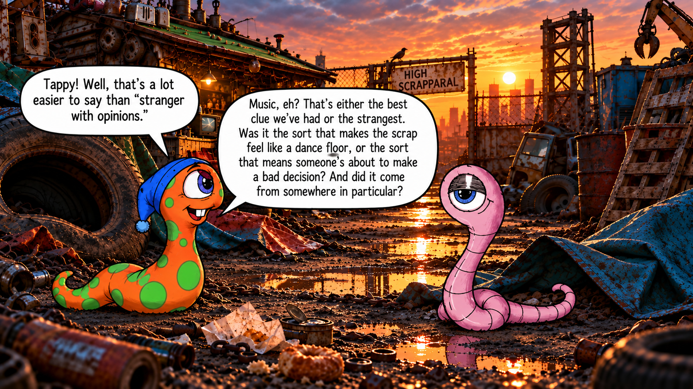
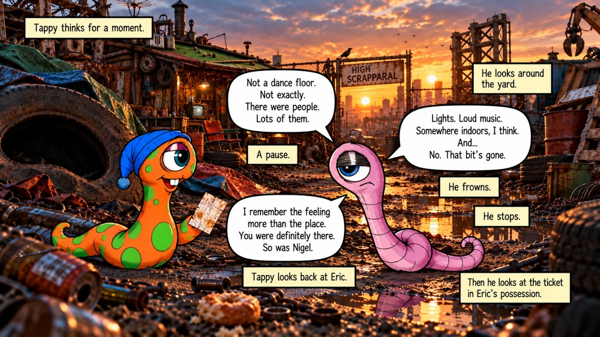
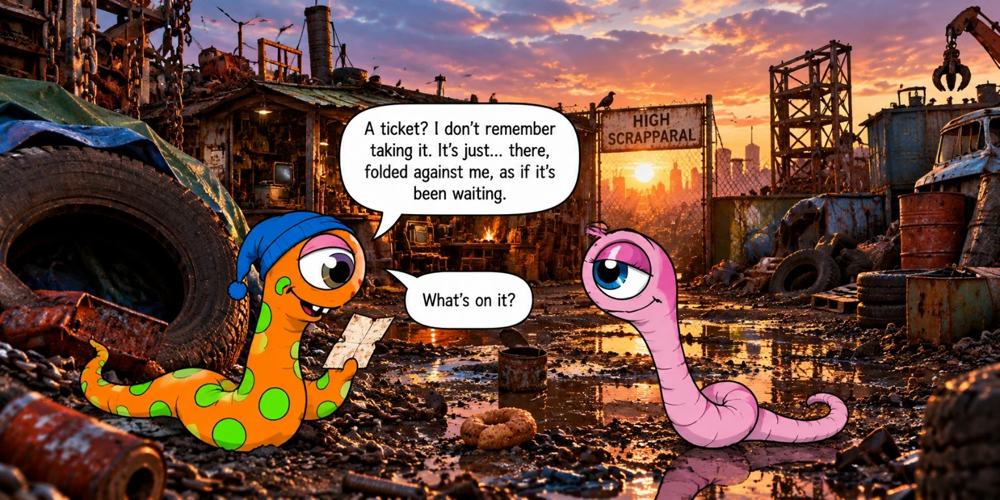
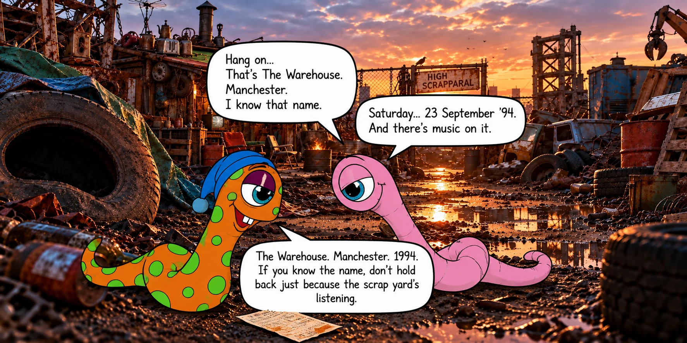
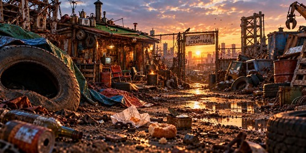
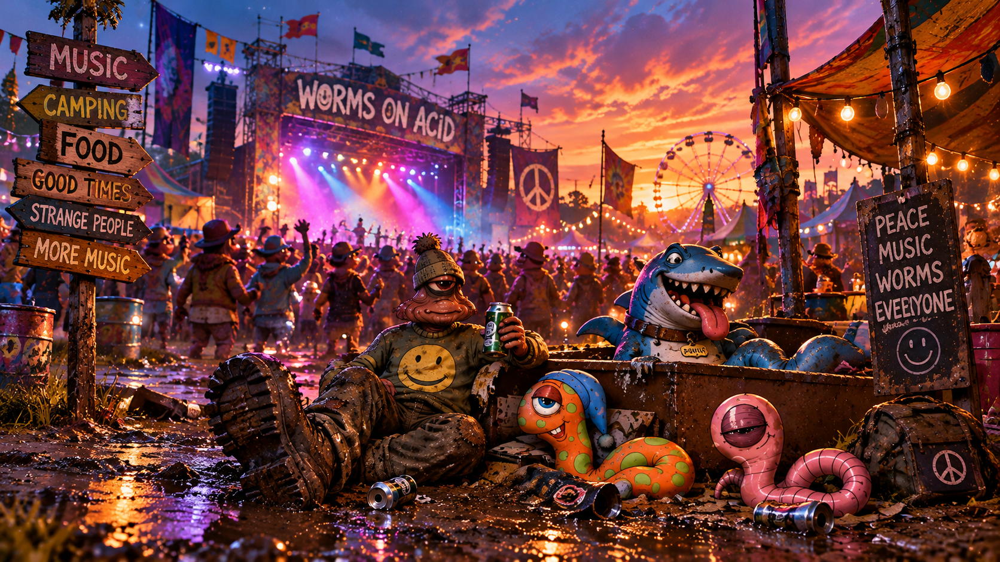
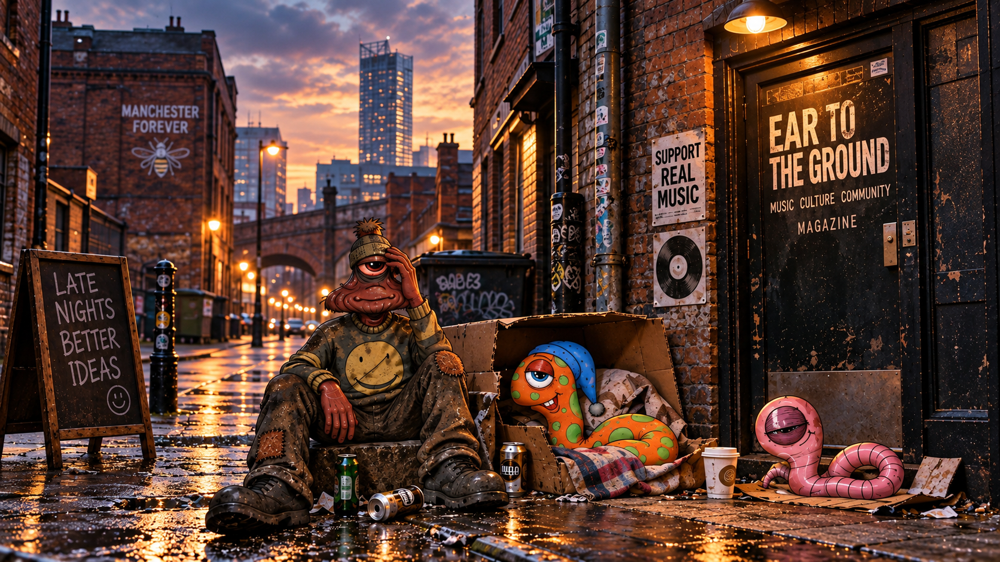

SCENE 01
The Stranger
The trail continues through the yard. A stranger is still negotiating with a tarpaulin.
READ SCENE →
He woke up
in a scrapyard.
He doesn't know
where he is.
He doesn't know
where Nigel is.
He doesn't remember
what happened last night.
He's taking it remarkably well.
FOLLOW ERIC'S JOURNEY →WORMS ON ACID is the world, the narrator, and the story being discovered as it happens. Something happened to these worms. They don't know what.
This is the wider world: its characters, places, strange events, games, and unanswered questions. The story belongs to the whole unruly crew.
There are festivals. There are hallucinations. There is a shark who thinks he's a dog. And somewhere out there is Nigel's scrapyard.
Eric is one of the characters we follow closely. He has his own personality, memories, and point of view — but WORMS ON ACID is bigger than Eric. The world unfolds around him, and he discovers it one bewilderling step at a time.
Seven scenes. One missing worm. More questions than answers.
Follow Eric and Tappy through High Scrapparal, one scene at a time. Each page shows the story artwork in sequence, with simple navigation to the next part.
EXPLORE ALL CHAPTERS → START WITH SCENE 1 →
The trail continues through the yard. A stranger is still negotiating with a tarpaulin.
READ SCENE →
Eric has no ticket he remembers — and plenty of questions.
READ SCENE →




Tappy recognises the venue, the city, and the date.
READ SCENE →Play, laugh, get distracted. It's all part of the journey.
A few worms, a shark, and other interesting types.

Curious. Friendly. Generally optimistic. Takes most things remarkably well.
View Eric
Owner of The High Scraparral. Practical. Usually involved in something.
Meet Nigel
Chilled. Mysterious. Usually knows more than she says.
Meet Manni
An Early Bird with a talent for terrifying swoops. Eric would rather keep his distance.
Meet Peter
A shark. Believes he is a dog. Loyal. Hungry. Complicated.
Meet RufusStrange places. Unexplained things. A few hints.

Nigel's scrapyard and home. Full of interesting things.
EXPLORE THE SCRAPYARD
Music. Lights. Worms. Things get weird.
ENTER THE FESTIVALS
Something important happened here. Eric remembers bits.
EXPLORE MANCHESTERDon't ask. Not yet anyway.
DON'T ASKFollow the world from the outside, or talk to Eric from the inside. Two voices, one unfolding story.
Follow the narrator for the wider story: new chapters, strange places, clues, games, and the things happening around the worms.
𝕏 @wormsonacidTalk to Eric directly. Offer advice, ask questions, or see what he makes of the situation. He might listen. He might misunderstand you.
𝕏 @ericonacidIf the live feed doesn't load, view @wormsonacid on X →
Follow Eric's story chapter by chapter. Start with the seven published scenes, then follow the trail as new chapters arrive.
Eric wakes in Nigel's scrapyard. Nigel is missing, and the clues don't add up.
The trail leads towards music, names and memories Eric cannot explain.